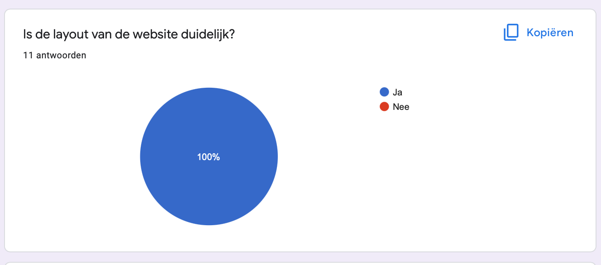
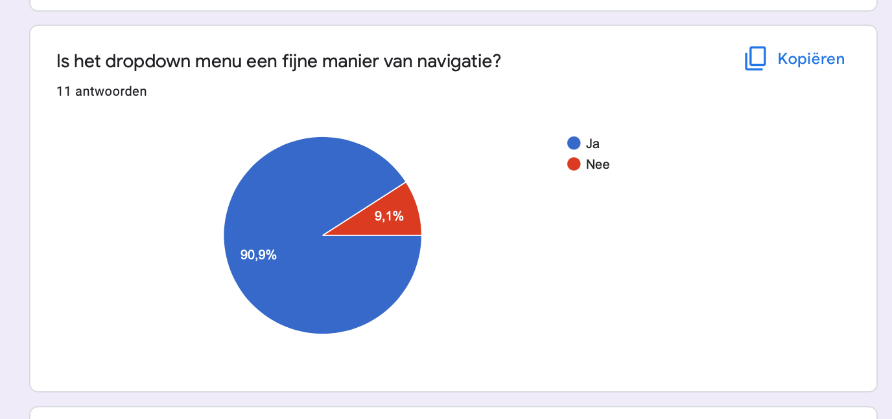
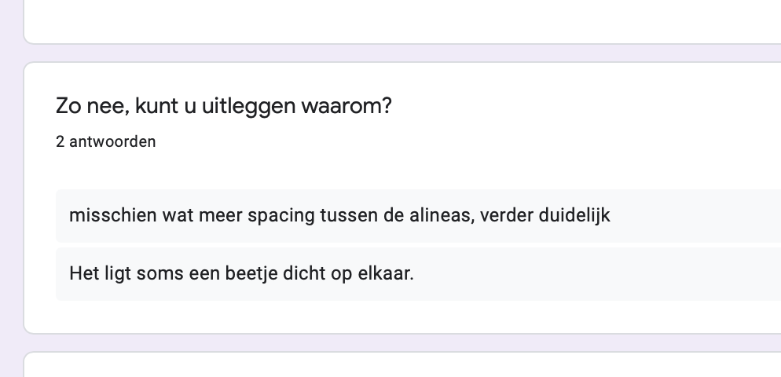

user tests | portfolio navigatie
Aanpak
In mijn tweede en derde portfolio reviews kreeg ik de feedback dat mijn portfolio nogal een doolhof kon zijn en dat er niet echt een makkelijke manier was van navigatie, je raakte snel verdwaald in leerdoelen en projecten en ik dacht dat een dropdown menu een goede manier was om dit probleem te verhelpen. Na dit gedaan te hebben heb ik een User Test opgesteld in een Google Forms enquête, om erachter te komen of dit ook daadwerkelijk het navigeren door mijn portfolio verbetert. Hieronder zie je het proces.
Het proces
Om de enquête te beginnen begon ik met een link naar mijn portfolio, hiermee vroeg ik de gebruiker om rustig de tijd te nemen om te navigeren door mijn portfolio. Vervolgens stelde ik een redelijk algemene Ja/Nee vraag:
Uit deze vraag bleek dat de algemene layout van mijn portfolio duidelijk was, na aanleiding van de mening van 11 gebruikers. Vervolgens stelde ik de volgende vraag:

Uit deze vraag bleek 10 van de 11 mensen vonden dat de dropdown menu een handige vorm van navigatie
was voor mijn portfolio. De ene persoon die het tegengestelde vond, vond dat omdat mijn portfolio
niet optimaal is gebouwd voor het gebruik op telefoon. Maar de meerderheid was het er mee eens dat
de dropdown menu hielp met navigatie.
Nog een vraag die ik stelde, die niet heel erg gefocust was
op de navigatie van de website, was een vraag over de layout van mijn projecten:
Hieruit bleek dat de meerderheid vond dat de layout duidelijk was, maar toch waren er wat mensen die het tegenovergestelde vonden en ze hadden best goede argumenten. Het ging er vooral om dat de alinea's dicht op elkaar liggen en dat wat meer spacing fijner zou zijn om te lezen.
Conclusie
Uit deze User Test kon ik concluderen dat de dropdown menu inderdaad een goede manier was om de navigatie te verbeteren. Over het algemeen ben ik tevreden met het resultaat van deze User Test, ik heb er ook zeker veel aan gehad.
© 2022 Yassin Chehlaoui